lorenz_partial_25d_additive_gennmse_obsnoise001__lc_sweepProject: Lorenz_INDpartial_N25_D1_NormTrue_T3__JacobianODE
Launched: 2026-04-17T15:20:10Z
Completed: 2026-04-17T18:50:13Z
Outcome: complete_clean
Git: latent-JacobianODE @ fd26c55
Expected runs: 9
lorenz_partial_25d_additive_gennmseDescription
Partial-obs Lorenz: observe only x (index 0), n_delays=25, delay_spacing=1. Encoder input: 25-D delay vector. Dynamic latent: 3-D (z_dyn). Null subspace: 22-D with kl_null_weight=0 (no structural penalty, per the additive+zero_init design). Joint training of encoder + Jacobian dynamics from the start; active loss terms: decoded-prediction (trajectory) + latent-prediction + reconstruction + loop-closure, all with gennMSE. Reconstruction mode = most_recent so recon + decoded-trajectory losses score only the current-time frame, not the older lags (avoids the redundant-target / thin-direction pathology flagged in the recent partial-obs hypothesis). obs_noise_scale=0. Uses the clean-encoding LPL target fix (no-op here since obs_noise=0, but kept for consistency).
Hypothesis
With loop closure enforcing encoder invertibility, the latent dynamics should be diffeomorphism-conjugate to the true Lorenz flow, preserving its Lyapunov spectrum (λ ≈ [0.91, 0, -14.57]) despite observing only x(t). The optimal LC weight likely sits in the 1e-3..1e-1 range (full-obs sweep peaked at 1e-1 with spectrum_mse ≈ 0.011). Free-running rollouts in observation space should be chaotic with long-run statistics matching the training data.
Open risk from the partial-obs sufficient-statistic hypothesis: the only hard constraint on z_dyn information content is reconstructing the current frame, so the encoder may dump history into z_null rather than surfacing it in z_dyn. Loop closure + LPL should apply counterbalancing pressure; if they don't, we'd see high traj_val loss / spectrum mismatch and know to revisit the loss design.
Success criteria
Swept axes (1): training.lightning.loop_closure_weight
Chosen run (by best_traj_loss): o14xwnle — traj_loss=0.00086, MASE=0.5354, R²=0.9992, LC loss=7.134, epoch=169.0
Swept-axis values at chosen run: training.lightning.loop_closure_weight=0
Runs analyzed: 9 (expected 9)
| run_idx | run_id | training.lightning.loop_closure_weight |
best_traj_loss | best_MASE | R² | LC loss | epoch |
|---|---|---|---|---|---|---|---|
| 0 | o14xwnle |
0 | 0.00086 | 0.5354 | 0.9992 | 7.134 | 169.0 |
| 1 | rnh0mo3j |
1.0e-06 | 0.00089 | 0.5412 | 0.9991 | 4.685 | 160.0 |
| 3 | d8ireow1 |
1.0e-04 | 0.00096 | 0.5626 | 0.9991 | 0.172 | 177.0 |
| 2 | 7hgswub6 |
1.0e-05 | 0.00098 | 0.5695 | 0.9990 | 0.858 | 152.0 |
| 4 | z8a1jmbf |
0.001 | 0.00121 | 0.6155 | 0.9988 | 0.035 | 116.0 |
| 5 | 3xgzru7u |
0.01 | 0.00124 | 0.6175 | 0.9988 | 0.001 | 177.0 |
| 6 | cj1fzag0 |
0.1 | 0.00144 | 0.6643 | 0.9986 | 0.000 | 151.0 |
| 7 | 0xhvd2y7 |
1 | 0.00151 | 0.6875 | 0.9985 | 0.000 | 189.0 |
| 8 | qhg02flb |
10 | 0.00202 | 0.8029 | 0.9980 | 0.000 | 100.0 |
| Criterion | Verdict | Note |
|---|---|---|
| Best run's leading Lyapunov exponent > 0 (chaos recovered) | Unknown | |
| Best run's predicted Lyapunov spectrum within ~30% of empirical | Unknown | |
| Best run's free-running sliced-Wasserstein-1 to training data distribution is low (sanity: obs histograms overlap) | Unknown | |
| val/trajectory_r2_score > 0.9 at the best configuration | Pass | Best R² = 0.9992; threshold > 0.9 |
| Loop closure bounded and monotonically improving at low LC | Unknown |
Automated verdicts use simple numeric-threshold parsing and may mis-classify qualitative criteria. The Discussion section below takes precedence.
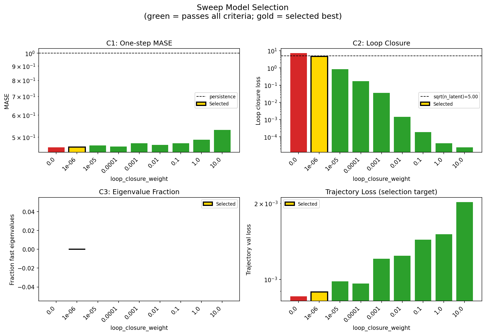
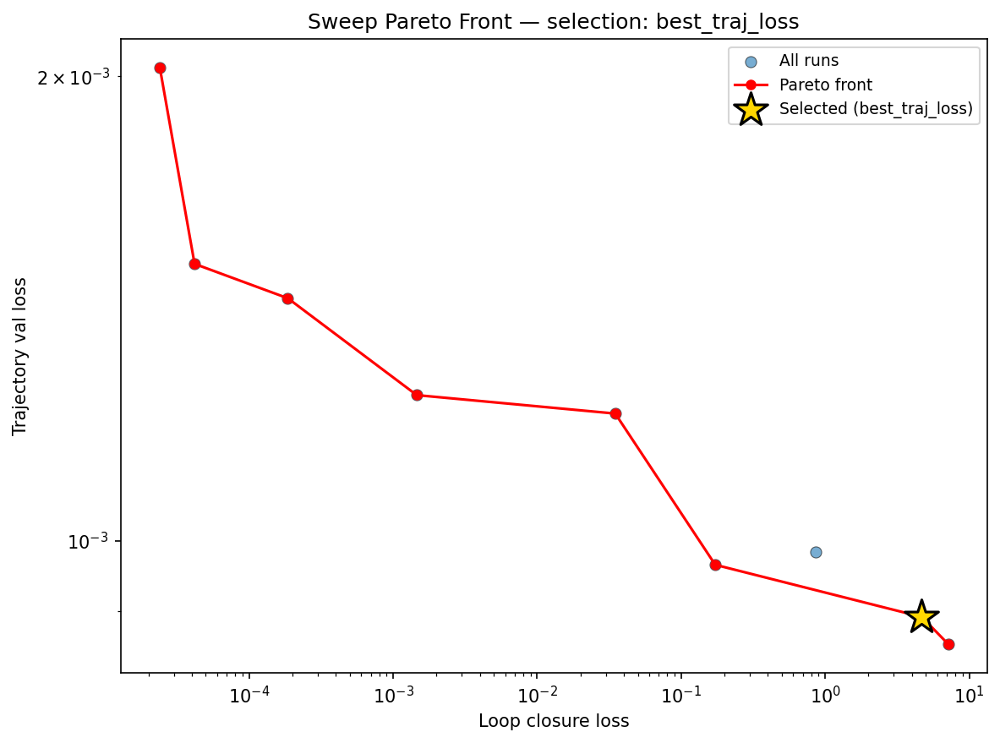
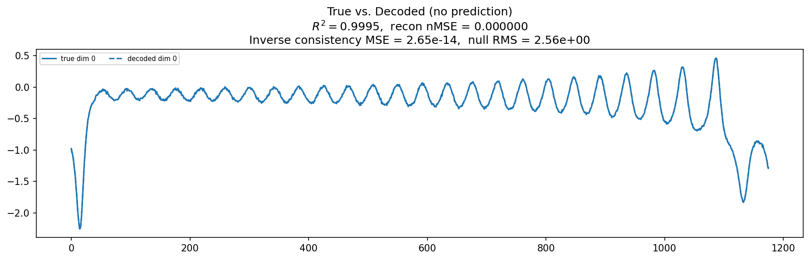
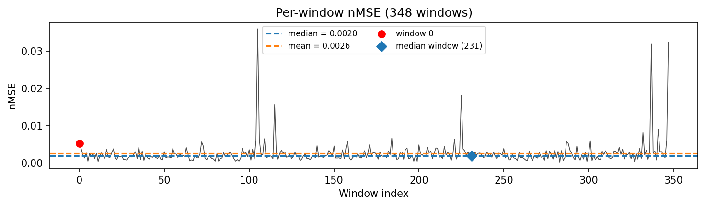
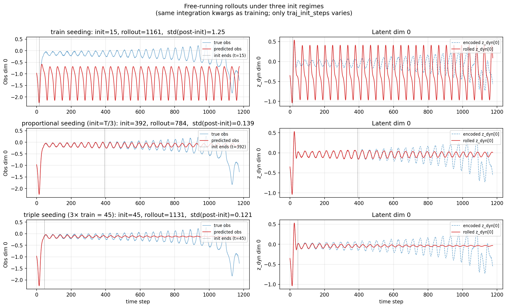
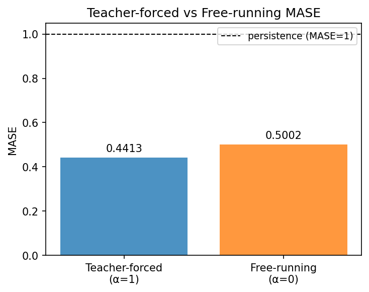
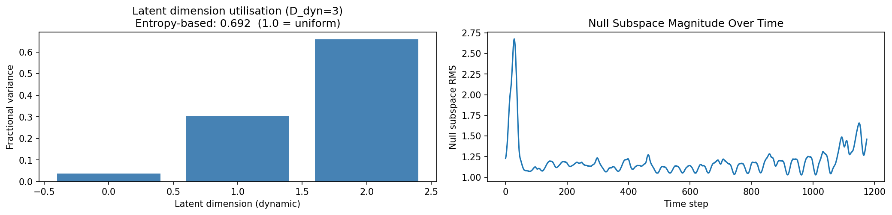
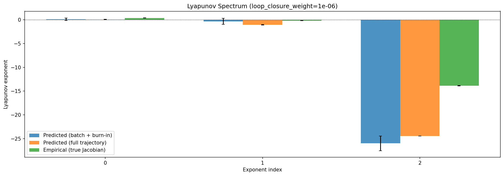
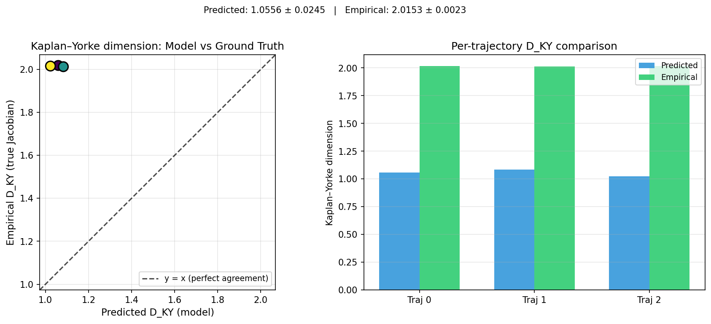


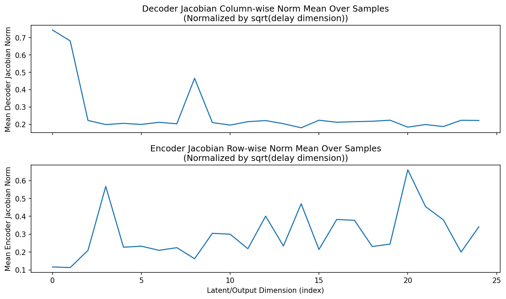
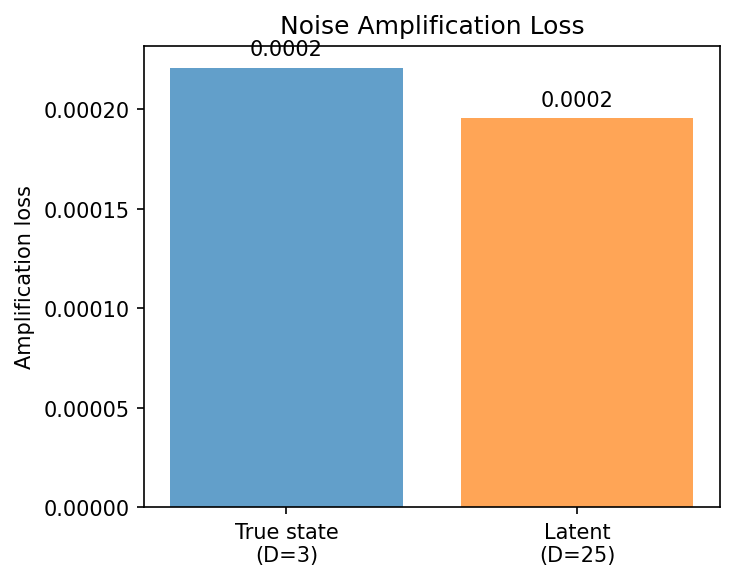
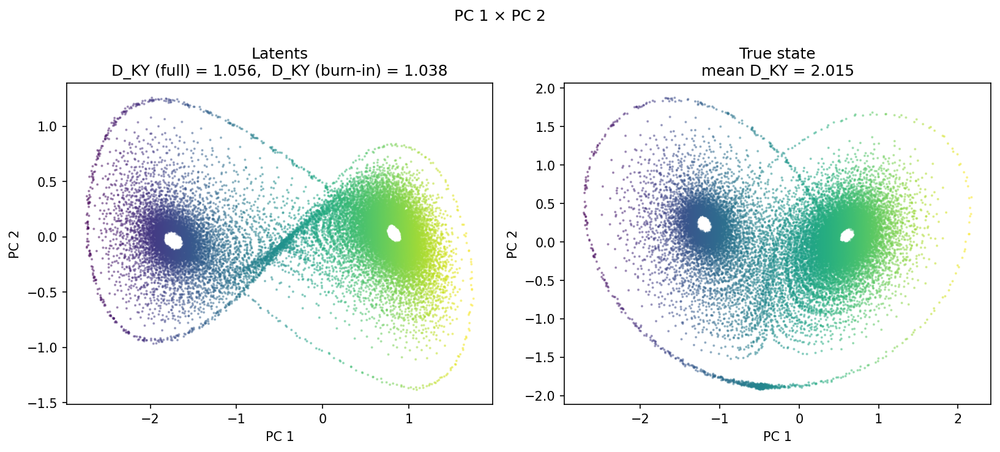
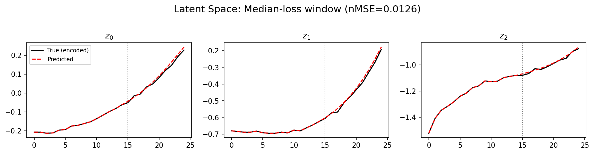
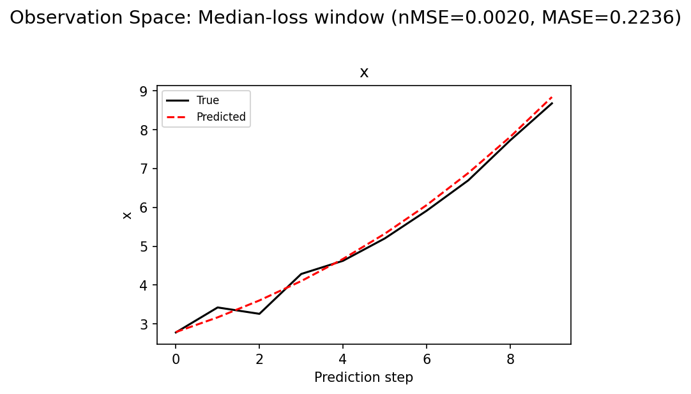
(to be written)
run_analytics stdoutrun_analyticsNo run_id provided — selecting best run from group 'lorenz_partial_25d_additive_gennmse_obsnoise001__lc_sweep' ...
Found 11 total runs in JacobianODE/Lorenz_INDpartial_N25_D1_NormTrue_T3__JacobianODE (group=lorenz_partial_25d_additive_gennmse_obsnoise001__lc_sweep)
All runs (state, loop_closure_weight, tangent_entropy_weight, kl_dyn_weight):
9vror9rv: state=finished, lc=0.0, te=0.0, kl_dyn=0.0
7hgswub6: state=finished, lc=1e-05, te=0.0, kl_dyn=0.0
z8a1jmbf: state=finished, lc=0.001, te=0.0, kl_dyn=0.0
c31v88rb: state=finished, lc=0.01, te=0.0, kl_dyn=0.0
cj1fzag0: state=finished, lc=0.1, te=0.0, kl_dyn=0.0
0xhvd2y7: state=finished, lc=1.0, te=0.0, kl_dyn=0.0
3xgzru7u: state=finished, lc=0.01, te=0.0, kl_dyn=0.0
d8ireow1: state=finished, lc=0.0001, te=0.0, kl_dyn=0.0
o14xwnle: state=finished, lc=0.0, te=0.0, kl_dyn=0.0
rnh0mo3j: state=finished, lc=1e-06, te=0.0, kl_dyn=0.0
qhg02flb: state=finished, lc=10.0, te=0.0, kl_dyn=0.0
slurm_timeout_min not found in any run config — falling back to 180 min
Including 9vror9rv (lc=0.0): use_all_runs=True (state=finished)
Including 7hgswub6 (lc=1e-05): use_all_runs=True (state=finished)
Including z8a1jmbf (lc=0.001): use_all_runs=True (state=finished)
Including c31v88rb (lc=0.01): use_all_runs=True (state=finished)
Including cj1fzag0 (lc=0.1): use_all_runs=True (state=finished)
Including 0xhvd2y7 (lc=1.0): use_all_runs=True (state=finished)
Including 3xgzru7u (lc=0.01): use_all_runs=True (state=finished)
Including d8ireow1 (lc=0.0001): use_all_runs=True (state=finished)
Including o14xwnle (lc=0.0): use_all_runs=True (state=finished)
Including rnh0mo3j (lc=1e-06): use_all_runs=True (state=finished)
Including qhg02flb (lc=10.0): use_all_runs=True (state=finished)
Found 11 effectively-done sweep runs:
loop_closure_weight=0.0, tangent_entropy_weight=0.0, kl_dyn_weight=0.0 -> run_id=9vror9rv
loop_closure_weight=0.0, tangent_entropy_weight=0.0, kl_dyn_weight=0.0 -> run_id=o14xwnle
loop_closure_weight=1e-06, tangent_entropy_weight=0.0, kl_dyn_weight=0.0 -> run_id=rnh0mo3j
loop_closure_weight=1e-05, tangent_entropy_weight=0.0, kl_dyn_weight=0.0 -> run_id=7hgswub6
loop_closure_weight=0.0001, tangent_entropy_weight=0.0, kl_dyn_weight=0.0 -> run_id=d8ireow1
loop_closure_weight=0.001, tangent_entropy_weight=0.0, kl_dyn_weight=0.0 -> run_id=z8a1jmbf
loop_closure_weight=0.01, tangent_entropy_weight=0.0, kl_dyn_weight=0.0 -> run_id=3xgzru7u
loop_closure_weight=0.01, tangent_entropy_weight=0.0, kl_dyn_weight=0.0 -> run_id=c31v88rb
loop_closure_weight=0.1, tangent_entropy_weight=0.0, kl_dyn_weight=0.0 -> run_id=cj1fzag0
loop_closure_weight=1.0, tangent_entropy_weight=0.0, kl_dyn_weight=0.0 -> run_id=0xhvd2y7
loop_closure_weight=10.0, tangent_entropy_weight=0.0, kl_dyn_weight=0.0 -> run_id=qhg02flb
Dropping 2 run(s) with no checkpoint dir: ['9vror9rv', 'c31v88rb']
n_dims=25, n_latent=25, n_dyn=3, dt=0.0150
run=o14xwnle: DiagnosticMetrics(one_step_mase=0.4591344892978668, loop_closure_loss=7.134218692779541, fast_eigenvalue_fraction=0.0, trajectory_val_loss=0.0008574000676162541) (from cache, n_batches=100)
run=rnh0mo3j: DiagnosticMetrics(one_step_mase=0.46033379435539246, loop_closure_loss=4.6850104331970215, fast_eigenvalue_fraction=0.0, trajectory_val_loss=0.0008926484733819962) (from cache, n_batches=100)
run=7hgswub6: DiagnosticMetrics(one_step_mase=0.46712175011634827, loop_closure_loss=0.8583828210830688, fast_eigenvalue_fraction=0.0, trajectory_val_loss=0.0009832428768277168) (from cache, n_batches=100)
run=d8ireow1: DiagnosticMetrics(one_step_mase=0.46212300658226013, loop_closure_loss=0.17248038947582245, fast_eigenvalue_fraction=0.0, trajectory_val_loss=0.0009647952974773943) (from cache, n_batches=100)
run=z8a1jmbf: DiagnosticMetrics(one_step_mase=0.4749892055988312, loop_closure_loss=0.03484678640961647, fast_eigenvalue_fraction=0.0, trajectory_val_loss=0.0012089101364836097) (from cache, n_batches=100)
run=3xgzru7u: DiagnosticMetrics(one_step_mase=0.4691356122493744, loop_closure_loss=0.0014590458013117313, fast_eigenvalue_fraction=0.0, trajectory_val_loss=0.001242600497789681) (from cache, n_batches=100)
run=cj1fzag0: DiagnosticMetrics(one_step_mase=0.47547024488449097, loop_closure_loss=0.00018559489399194717, fast_eigenvalue_fraction=0.0, trajectory_val_loss=0.001435752841643989) (from cache, n_batches=100)
run=0xhvd2y7: DiagnosticMetrics(one_step_mase=0.48966339230537415, loop_closure_loss=4.1786850488279015e-05, fast_eigenvalue_fraction=0.0, trajectory_val_loss=0.0015112519031390548) (from cache, n_batches=100)
run=qhg02flb: DiagnosticMetrics(one_step_mase=0.5301817655563354, loop_closure_loss=2.3997810785658658e-05, fast_eigenvalue_fraction=0.0, trajectory_val_loss=0.0020244133193045855) (from cache, n_batches=100)
Ranking method: best_traj_loss
Best run ID: rnh0mo3j
Best loop_closure_weight: 1e-06
Best tangent_entropy_weight: 0.0
Best kl_dyn_weight: 0.0
Best traj loss: 0.000893
Criteria applied: ['C1', 'C2', 'C3']
Surviving: 8 / 9
Auto-selected run_id: rnh0mo3j
======================================================================
PARETO FRONTIER RUNS (8 runs)
======================================================================
Run ID LC Loss Traj Val Loss
------------ -------------- --------------
qhg02flb 0.000024 0.002024
0xhvd2y7 0.000042 0.001511
cj1fzag0 0.000186 0.001436
3xgzru7u 0.001459 0.001243
z8a1jmbf 0.034847 0.001209
d8ireow1 0.172480 0.000965
rnh0mo3j 4.685010 0.000893 <-- selected
o14xwnle 7.134219 0.000857
======================================================================
RANKING METHOD COMPARISON (over 8 survivors)
======================================================================
Method Run ID LC Loss Traj Val Loss
---------------------- ------------ -------------- --------------
best_traj_loss rnh0mo3j 4.685010 0.000893 <-- active
pareto_knee z8a1jmbf 0.034847 0.001209
geo_rank rnh0mo3j 4.685010 0.000893
minimax_rank z8a1jmbf 0.034847 0.001209
geo_log_score rnh0mo3j 4.685010 0.000893
minimax_log_score 3xgzru7u 0.001459 0.001243
======================================================================
Loading run rnh0mo3j from JacobianODE/Lorenz_INDpartial_N25_D1_NormTrue_T3__JacobianODE ...
Train dataset shape: torch.Size([25322, 25, 25])
Validation dataset shape: torch.Size([8057, 25, 25])
Test dataset shape: torch.Size([3453, 25, 25])
Train trajectories dataset shape: torch.Size([22, 1176, 25])
Validation trajectories dataset shape: torch.Size([7, 1176, 25])
Test trajectories dataset shape: torch.Size([3, 1176, 25])
Loading checkpoint epoch=160-step=32200.ckpt...
Computing reconstruction ...
Computing MASE ...
Teacher-forced MASE: 0.4413
Free-running MASE: 0.5002
Computing latent utilization ...
Entropy-based utilization: 0.692
Null subspace mean RMS: 1.213063e+00
Computing Lyapunov exponents ...
Computing full-trajectory Lyapunov (3 test trajs, T=1176) ...
Predicted Lyapunov exponents (batch+burn-in, 128 windowed trajs):
λ_1 = +0.0951 ± 0.2488
λ_2 = -0.3388 ± 0.6322
λ_3 = -25.9748 ± 1.5448
Predicted Lyapunov exponents (full-length, 3 test trajs):
λ_1 = +0.0603 ± 0.0346
λ_2 = -1.0688 ± 0.0463
λ_3 = -24.4703 ± 0.0082
Empirical Lyapunov exponents (mean ± std):
λ_1 = +0.3846 ± 0.0251
λ_2 = -0.1716 ± 0.0444
λ_3 = -13.8799 ± 0.0398
Mean KY dim (predicted): 1.056 ± 0.025
Mean KY dim (empirical): 2.015 ± 0.002
Mean KY dim (burn-in): 1.038 ± 0.731
Computing prediction windows ...
Windows: 348 — nMSE min=0.0003, median=0.0020, mean=0.0026, max=0.0360
Computing long trajectory prediction ...
Computing encoder/decoder Jacobians ...
encoder_jacobian: (128, 25, 25)
decoder_jacobian: (128, 25, 25)
Computing amplification loss ...
Amplification loss — True state: 0.000221
Amplification loss — Latent: 0.000196